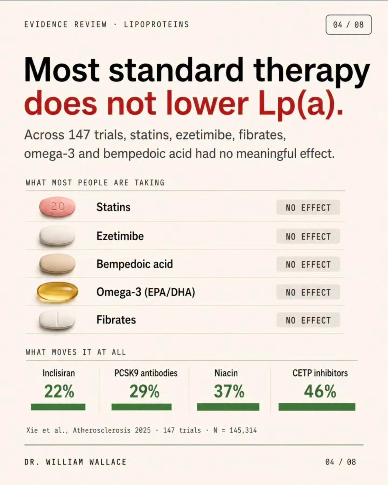

Niacin (nicotinic acid, a form of vitamin B3), fibrates and several HDL-raising drugs were once mainstream tools for improving cholesterol numbers. The short answer from the group is that most of them lost their place once large randomized trials tested them on top of modern statin therapy. Niacin added to high-dose statins did not reduce heart attacks or strokes in two large trials, and it caused more side effects12. Drugs that raise HDL cholesterol failed one after another3.
That does not make every older drug useless. Fibrates, which mainly lower triglycerides, show a possible benefit in a particular group of people (high triglycerides with low HDL, typical of metabolic syndrome), although trial results overall are mixed4. Niacin remains one of the few things that can noticeably lower lipoprotein(a), or Lp(a), a genetically set particle that statins do not touch56. Even there, Louis Nervegna has changed his mind and no longer sees a use case for it2.
This summary explains why the trials disappointed, what the older drug classes can and cannot do, and how the group's admins think about them. It is an educational summary of the group's discussions, not medical advice; decisions about any of these drugs belong with your own doctor.
Why outcome trials matter more than lab numbers
A recurring theme in the group is that a drug can improve a blood test without improving health. Louis points out that not every therapy that lowers LDL also lowers the risk of major adverse cardiovascular events (MACE: heart attacks, strokes and cardiovascular death)1. Niacin plus a high-dose statin lowers LDL more than the statin alone, yet two large, well-done randomized trials found no extra reduction in MACE. The CETP inhibitors torcetrapib and dalcetrapib also lowered LDL and raised HDL, but failed in outcome trials1.
This is why, in Louis's words, the FDA requires large randomized trials showing a reduction in heart attacks, strokes and cardiovascular death before approving a drug for that purpose1. The same post carries an AI fact-check that Louis ran (he encourages members to do this) which distinguishes two kinds of approval: a lipid-lowering indication based on a validated surrogate such as LDL-C, and a cardiovascular risk-reduction indication that requires outcome trials1.
The niacin trials
What niacin is
Niacin (nicotinic acid) is the form of vitamin B3 that was used for years to improve cholesterol. It lowers LDL modestly and raises HDL, and it still holds an FDA approval for treating dyslipidemia9. It is distinct from other B3 forms such as nicotinamide (niacinamide), nicotinamide riboside (NR) and nicotinamide mononucleotide (NMN)10.
AIM-HIGH
AIM-HIGH tested extended-release niacin added to statin therapy. A shared summary says niacin raised HDL by 25%, but cardiovascular events did not decrease and the trial was stopped early for futility3. The AI fact-check in another post gives more detail: the trial (2011) enrolled 3,414 high-risk patients and stopped early for lack of efficacy, with a non-significant trend toward more ischemic stroke1.
HPS2-THRIVE
HPS2-THRIVE (2014) tested extended-release niacin plus laropiprant, a drug added to reduce flushing, in more than 25,000 patients already on statins. HDL went up, but major vascular events did not go down, and serious adverse events increased3. The fact-check lists those extra events as gastrointestinal, bleeding, infection and new-onset diabetes1.
Why did extra LDL lowering not help?
The AI fact-check adds a nuance: patients in these trials were already well managed on statins, so baseline LDL-C was already low. The additional LDL drop from niacin (roughly 10-12%) was apparently too small to translate into further MACE reduction on top of intensive statin therapy1. In other words, the trials do not prove that niacin does nothing in anyone; they show that adding it to a strong statin regimen is not worthwhile.
What the admins conclude
Louis gives his personal opinion plainly2:
- If the choice were between doing nothing and taking niacin, he would take niacin.
- Given how many proven options now exist, he sees no reason to take niacin to prevent cardiovascular disease.
- He would never combine it with high-dose statins, because two large trials showed no added benefit but more side effects. When both were pooled in a meta-analysis, there was a small increase in deaths among those taking niacin with high-dose statins compared with high-dose statins alone.
- The only remaining use he can see is in people who refuse all pharmaceuticals.
He repeats the warning across several posts: niacin should not be combined with high-dose statins57910.
HDL-raising drugs: a run of failures
Niacin was one of several HDL-raising approaches. The group has summarized the others in some detail.
| Trial | Drug | What happened |
|---|---|---|
| AIM-HIGH | niacin | HDL +25%, no fewer events, stopped early for futility |
| HPS2-THRIVE | niacin + laropiprant | HDL up, no fewer major vascular events, more serious adverse events |
| dal-OUTCOMES | dalcetrapib | HDL +31%, no event reduction |
| ILLUMINATE | torcetrapib | HDL +72%, cardiovascular death increased |
| ACCELERATE | evacetrapib | HDL +130%, no reduction in major adverse cardiovascular events |
All five rows come from a shared post that Louis endorsed3. In a separate post he describes ILLUMINATE as terminated early because of more events and deaths, dal-OUTCOMES as raising HDL-C and ApoA-I by about 30% without reducing cardiovascular death, heart attack or stroke, and ACCELERATE as raising ApoA-I by over 100% without a significant MACE reduction11. He adds that large fibrate and niacin trials designed to raise HDL failed too, as did CSL112, an infusion of native ApoA-I isolated from human plasma, which he calls "probably the nail in the coffin" for ApoA-I as directly causal11.
Mendelian randomization (a genetic method that uses natural gene variation as a stand-in for a lifelong treatment) points the same way, according to Louis: genes that predispose to higher HDL or ApoA-I, without improving insulin sensitivity, do not lower lifetime risk11.
What explains the HDL association then?
Louis proposes that HDL and ApoA-I are mainly a proxy for insulin sensitivity. Low HDL usually reflects insulin resistance and metabolic syndrome, with excess visceral fat as the main driver, so it is the insulin resistance that is causal and not the HDL itself1112. He notes that the one scenario in which risk really does fall is when HDL rises as a side effect of improved insulin sensitivity3.
He still leaves a door open: certain HDL subfractions might be protective and are of research interest, "but as a whole, it seems like a dead end now"3. Practically, he says the most effective way to raise HDL is to lose visceral fat, and that replacing refined carbohydrate with healthy fat (as a traditional Mediterranean diet does) raises it12. Someone with genetically low HDL who has good insulin sensitivity and glycemic control probably has little to worry about, though very low HDL without an explanation is worth raising with a doctor12.
Niacin and Lp(a)
Lp(a) is an LDL-like particle with an extra "tail," set by genes and fixed for life; about one in five people carry a high level6. A shared graphic says that across 147 trials, statins, ezetimibe, fibrates and fish oil had no effect on it, and that newer drugs lower it by 80-99% but have not yet been proven to prevent heart attacks6.

Niacin is one of the few older options that does lower it:
- A small clinical trial found extended-release niacin at 1.5-2.0 g/day lowered Lp(a) by about 28% in men, but only in those with the low-molecular-weight apo(a) phenotype, not the high one7.
- One group member saw a 40% Lp(a) drop with 1,500 mg of niacin added to their regimen5.
- Louis notes case reports of drops as large as 80%, but says this is very uncommon and most people see modest reductions9.
The caveats are firm. Louis's January 2024 post says niacin is not proven to reduce heart attacks, strokes or mortality, should not replace proven medications, and could at most be added to a proven regimen when Lp(a) is very high, a point to discuss with a cardiologist5. A later post adds that niacin used alone in a high-risk patient lacks an evidence base, and that 1 g is only half the dose used in small niacin trials that did show benefit9. By September 2026 Louis had changed his view: he used to think niacin might still have a use for high Lp(a), but after the failure of the HORIZON trial he no longer does2.
Some integrative clinicians continue to use it. Louis relays that Dr. Joel Kahn still uses niacin, vitamin C with lysine and flaxseed for patients with high Lp(a), and says explicitly that he is not endorsing any of this13. He has also shared a Kahn clinic case study on lowering Lp(a) with diet and supplements, which is a single-case report on a risk factor that is generally resistant to lifestyle change14, and a Kahn video commenting on a recent Cleveland Clinic niacin study, with no data given15.
Practical issues with niacin
- The flush. Niacin causes a flush that is harmless but can be startling. Louis says it fades with continued use and can be softened with a baby aspirin, a large meal or bedtime dosing5.
- Sustained-release forms. Louis notes that time-release niacin is tougher on the liver, and that a sustained-release product designed to match the prescription drug Niaspan has little to no flush5.
- Metabolite signal. Gokhan Can summarized a 2024 study (Ferrell et al.) in which the end-products of niacin metabolism, 2PY and 4PY, predicted major adverse cardiac events over three years in a US and a European cohort. Hazard ratios were roughly 1.6-2.0 for elevated levels, and 4PY promoted vascular inflammation in cells and mice. The summary also notes that Mendelian randomization did not find a causal link, possibly because the genetic variant used was a weak predictor, and it raises questions about high niacin intake from food fortification16. Note that this is an association study of niacin breakdown products, not a trial of niacin supplements.
Fibrates
Fibrates (fenofibrate and gemfibrozil are the popular ones) are PPAR-alpha agonists that lower triglycerides and raise HDL, with some anti-inflammatory effects4. In Gokhan's summary of a 2020 review (Kim and Kim, Diabetes & Metabolism Journal), the picture is mixed:
- Early trials of gemfibrozil (the Helsinki Heart Study and VA-HIT) showed significant reductions in cardiovascular events, whereas later bezafibrate trials (BIP and LEADER) failed to show benefit4.
- The FIELD trial of fenofibrate in type 2 diabetes missed its primary endpoint but suggested benefit in subgroups. ACCORD (fenofibrate plus simvastatin versus simvastatin) found no additional benefit overall, but a subgroup with high triglycerides and low HDL had fewer events4.
- Real-world data: in the Three City study, elderly patients on fibrates had 34% lower stroke risk than those on no lipid-lowering therapy, and the ECLIPSE study found a 26% reduction in major cardiovascular events with fenofibrate plus statin versus statin alone in metabolic syndrome (36% in those with high triglycerides and low HDL)4.
The review's conclusion, as relayed, is that fibrates may have a role in metabolic syndrome with atherogenic dyslipidemia (high triglycerides, low HDL, small dense LDL), while the overall trial record is not clear-cut4. Observational subgroup findings and real-world studies are weaker evidence than a positive randomized trial, so this remains a hypothesis-generating signal. Separately, the post mentions gemfibrozil as a possible longevity drug based on mouse data4.

Other tidbits from the group:
- Fibrates lowered hsCRP (an inflammation marker) by about 10.3% on average in a meta-analysis Louis cited, compared with 17.3% for statins, 20% for bempedoic acid and 3.2% for ezetimibe, though the paper's own illustration marks the fibrate result as not statistically significant and shows PCSK9 inhibitors slightly raising hsCRP17.
- A genetic drug-target analysis reported by Louis found no association of fibrates, omega-3 or niacin with liver cancer risk, whereas absorption inhibitors such as ezetimibe were linked to 31% lower odds and statins to 35% lower odds18.
- In the Bale-Doneen approach to plaque management, described from a 2016 community-based study, fibrates, bile acid sequestrants and fish oils were used "as needed" alongside statins, ezetimibe or niacin. Carotid intima-media thickness fell markedly over a median of three years. Because this was a multi-drug package, the result cannot be attributed to any single drug19.
Bile acid binders, from resins to psyllium
Bile acid sequestrants (resins) bind bile acids in the gut so the liver must pull cholesterol out of the blood to make more. The American Heart Association's patient page, shared in the group, covers statins, absorption inhibitors and resins20. The group's posts have little to say about the prescription resins, apart from a genetic analysis in which bile acid sequestrants showed inconsistent results for liver cancer risk that need replication18.
The group has much more to say about fibers that work on the same principle:
- A pooled analysis of 28 randomized trials (Jovanovski 2018, 1,924 participants) found that about 10 g/day of psyllium lowers LDL by roughly 13 mg/dL. A shared explainer says the mechanism is mechanical: psyllium forms a viscous gel that traps bile acids, normally about 95% reabsorbed, so the liver upregulates LDL receptors to pull LDL from the blood. This is the same principle as prescription sequestrants821.
- Louis shared a video noting that only gel-forming fibers (psyllium, oat and barley beta-glucan, raw guar gum) work this way, whereas inulin, FOS and wheat bran do not. A 2025 analysis of 41 trials found about 9 mg/dL for psyllium, a smaller figure than the earlier pooled result22. Another post makes the same point: inulin is a fine prebiotic but does not lower cholesterol23.
- Oat beta-glucan at around 3 g/day lowers LDL by about 5-7% through bile acid binding, according to a FoundMyFitness post24.
- Louis also states that psyllium lowers A1C by about 0.5% and blunts meal-related glucose spikes, though the source for that post is no longer available25.

These are modest effects compared with a statin, but they are food-level or supplement-level tools that can sit alongside medication.
Niacin beyond the heart: NAD and early research
Much of Louis's recent interest in niacin is not about cholesterol at all. Nicotinic acid and the other B3 forms raise cellular NAD, which he suggests is the common mechanism behind several findings. All of these are early or preclinical:
- Vascular calcification. A 2025 mouse study (Cell Death Discovery) found niacin reduced calcification via SIRT1 and SIRT6. Louis stresses it was an engineered mouse model and that it is unclear whether this translates to humans10.
- Glioblastoma. A small phase 1 trial of controlled-release niacin added to standard therapy reported 82% of patients progression-free at six months, versus about 54% in earlier studies. The figure comes from a small group and a historical comparison, and a randomized phase 2 trial is under way262728.
- Parkinson's and glaucoma. Small trials in Parkinson's disease (a 2021 trial) and glaucoma are described as early results2930. Skin-cancer prevention has the strongest evidence, but that involves nicotinamide rather than nicotinic acid27.
None of this changes the cardiovascular conclusion. It is useful mainly as context for why niacin keeps coming up in the group.
Anecdotes and combined regimens
Two posts feature Dr. Ford Brewer, who reports reducing his carotid artery age from 72-73 to about 52 over roughly two years. His changes were low-dose rosuvastatin (5 mg), daily salmon or omega-3, niacin, switching from an ARB to an ACE inhibitor (ramipril), cutting carbohydrates and losing about 10 lb3132. Louis notes this is a single self-reported case from a clinic that also sells services and supplements31. With so many changes at once, it cannot show that niacin contributed.
What this means for you
- Large trials found no outcome benefit from adding niacin to high-dose statins, and the group's admins say not to combine them125.
- Louis would only consider niacin for people who refuse all pharmaceuticals, and he is no longer convinced it has a role in high Lp(a)2.
- If you have high Lp(a), the group's guidance has been to talk to your cardiologist before trying niacin; it is not a replacement for proven treatments59.
- Raising HDL as a goal in itself has not worked in trials; improving insulin sensitivity and visceral fat is the lever the group emphasizes312.
- Fibrates may be worth discussing with a doctor if triglycerides are high and HDL is low, recognizing that the evidence is mixed4.
- If you want a bile-acid-binding option, psyllium or oat/barley beta-glucan are the gel-forming fibers cited, with about 13 mg/dL (or perhaps 9 mg/dL) LDL reduction for psyllium822.
Frequently asked questions
Does niacin still lower cardiovascular risk?
Not demonstrably when added to statins. The AIM-HIGH and HPS2-THRIVE trials found no extra reduction in events and more side effects1. Louis also notes that niacin as monotherapy has never been proven to reduce MACE, even in people with high Lp(a)9.
Why did raising HDL not help?
Louis's explanation is that HDL mostly marks insulin resistance rather than causing disease, so drugs that raise HDL without fixing insulin sensitivity do not lower risk11. Some HDL subfractions may still matter and are under study3.
Can niacin lower Lp(a)?
Yes, in some people: about 28% in a small trial of men at 1.5-2.0 g/day (dependent on apo(a) type), and 40% in one group member, with rare reports of up to 80%579. But a lower Lp(a) from niacin has not been shown to prevent heart attacks5.
Is the niacin flush dangerous?
Louis describes it as harmless but startling, and says it fades with continued use5. His caution is about the liver effects of time-release forms5.
Are fibrates better than niacin?
The group's material does not compare them head to head. Fibrates have a mixed trial record with possible benefit in people with high triglycerides and low HDL, whereas niacin has two large negative trials on top of statins14.
Are other forms of vitamin B3 the same as niacin?
They raise NAD, but they are different molecules. Louis notes that other forms (nicotinamide, NR, NMN) tend to be better tolerated, while most of the lipid and glaucoma work used nicotinic acid1030.